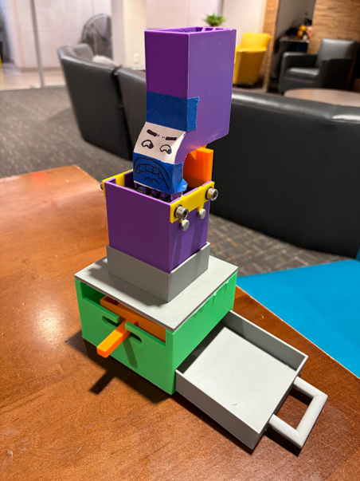
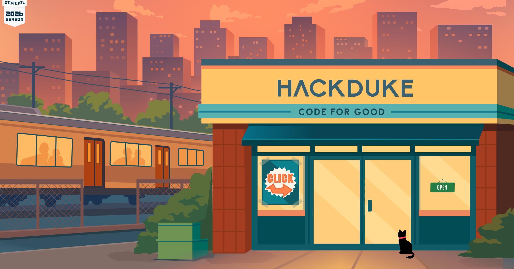

02 / SELECTED WORK
Projects.
From underwater robotics and assistive devices to lab work and team builds. Each project starts with a question worth making something for.
DR / 01UNDERWATER ROBOTICS
DUKE ROBOTICS · MECHANICAL DESIGN · 2026—
RoboSub AUV Claw Mechanism
DU / 02ASSISTIVE TECHNOLOGY
DUKE eNABLE · MEDICAL DEVICES · 2026—
Assistive Device Design
DU / 03PROTOTYPE SYSTEM
DESIGN & FABRICATION · 2026—
Wilson Climbing Wall Camera Mount
 EGR / 04MECHANICAL SYSTEM
EGR / 04MECHANICAL SYSTEMEGR121L · ARDUINO · 2026
Rube Goldberg Machine

EGR / 05MECHANICAL SYSTEMEGR121L · SOLIDWORKS · 2026
Sunflower Shelling Machine
BIO / 06MOLECULAR BIOLOGY
BIO201L · MOLECULAR BIOLOGY · 2026
Yeast Genome Cloning
 ASCE / 07MATERIALS TESTING
ASCE / 07MATERIALS TESTINGDUKE ASCE · STRUCTURAL DESIGN
Mini Concrete Canoe Prototype

HD / 08FULL-STACK PLATFORMHACKDUKE · SOFTWARE
2026 HackDuke Event Platform
FRC / 09COMPETITION ROBOTICS
CODE RED ROBOTICS · FOUR YEARS